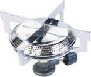
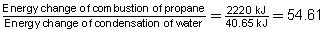
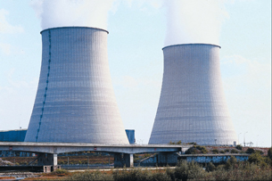
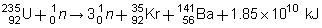

Module 1—Chemical Foundations
 Read
Read
intermolecular: existing or acting between molecules
Chemical reactions involve the breaking of bonds within reactant molecules, a complete rearrangement of the atoms, and the forming of product molecules that consist of bonds with atoms different than those in the reactant molecules. Therefore, a chemical change involves a change in intramolecular bonds in matter. Intramolecular bonds, like the ionic and covalent bonds you have studied in this module, are much stronger than intermolecular bonds. Therefore, in most cases, a chemical change involves a larger energy change than a physical change. In many cases, chemical changes are difficult or impossible to reverse. In a chemical change, new substances are formed with different properties than those of the starting materials. Most of your study in Chemistry 20 will focus on chemical changes.
 Self-Check
Self-Check

© 2007 Jupiterimages Corporation
SC 1. The balanced chemical reaction for the combustion of propane in a small camp stove is shown below.
C3H8(g) + 5 O2(g) → 3 CO2(g) + 4 H2O(g) + 2220 kJ
-
How does this reaction demonstrate that the change in matter affects the covalent bonds in the propane and oxygen molecules?
-
Is the combustion of propane an exothermic process or an endothermic process?
-
Compare the energy change involved in the combustion of propane to the condensation of water. What is the factor difference between the energy involved in these processes?
Self-Check Answer
SC 1.
-
The covalent bonds between C-C and C-H atoms in propane and the O-O bonds are broken and new bonds, between C-O and H-O atoms, are formed to make the products of the reaction.
-
The reaction shows that energy is a product of the reaction. Therefore, the reaction is exothermic.
- 
The energy change from the combustion of propane is 54.61 times greater than the energy change for the condensation of water.
How do you know if a chemical change has occurred? The key to identifying a chemical change is being able to detect the formation of a new substance. All chemical reactions involve the production of new substances. Several clues indicate a chemical change has occurred:
-
colour change
-
odour (smell) change
-
state change—usually bubbles indicating a gas is formed or a solid precipitate is forming
-
energy change—most commonly detected by a change in temperature
It is important to understand that these clues are a general guide and that identifying one of these changes doesn’t necessarily indicate a chemical change. For example, if you heat water above 100°C, it will boil and produce bubbles. However, these bubbles are due to the state of water being changed. It is not a chemical change, since no new substance is formed. In cases where the evidence is unclear, you can often use simple diagnostic tests to determine whether a new product has been formed.
Self-Check
SC 2. Which of the following changes are physical, and which are chemical?
-
Copper wire is made from sheets of copper.
-
Fruit juices containing sugar ferment when yeast is added.
-
Oxygen is liquefied.
-
Sodium metal, Na(s), reacts violently with water to produce sodium hydroxide and hydrogen gas.
-
Naphthalene (mothballs) sublimes (changes directly from the solid state to the gas state).
-
Butane, a hydrocarbon, undergoes combustion.
Self-Check Answer
SC 2.
- physical
- chemical
- physical
- chemical
- physical
- chemical
Nuclear Change

© 2007 Jupiterimages Corporation
The particle theory of matter applies to the subatomic particles that make up atoms. Subatomic particles are influenced by the nuclear force—the force of attraction between protons, between neutrons, and between protons and neutrons. Nuclear forces are much stronger than the forces between electrons and protons that result in chemical bonds. In fact, the nuclear force is the strongest force known. Since extremely large forces are needed to hold nuclear particles together, extremely large quantities of energy are required to break these intranuclear bonds and extremely large quantities of energy are released when subatomic particles reassemble. In a nuclear reaction, the rearrangement of protons and neutrons causes new products to be formed. In the case of a nuclear power plant, energy in the form of radiation is emitted.
Example
Uranium is a common nuclear fuel. The nuclear reaction involving uranium-235 is illustrated below.

In this equation you will notice that n represents a neutron and that the process yields different kinds of atoms due to the rearrangement of protons and neutrons that occur.
Notice that the energy involved in the nuclear change is incredibly large (1.85 x 1010 kJ) compared to that of a chemical change (2220 kJ) or phase change (6.01 kJ and 40.65 kJ).
The following is a summary:
-
Phase changes involve the rearrangement of particles that affect the bonds between particles (intermolecular bonds). These changes are characterized by having relatively small energy changes and no new substances formed.
-
Chemical changes involve the rearrangement of particles that affect the bonds within a particle (intramolecular bonds). Chemical changes are characterized by having larger energy changes and the formation of new substances with new properties.
-
Nuclear changes involve the rearrangement of sub-atomic particles within an atom (nuclear bonds). These changes are characterized by having massive energy changes, the formation of new elements, and the release of radiation.
Read
In the Nelson Chemistry textbook, read “The Kinetic Molecular Theory” on pages 47 to 49.
Can you identify aspects of the particle theory that are consistent with the kinetic molecular theory? Prepare a list for your notes, and place a copy in your chemistry folder.
Self-Check
SC 3. Complete questions 10(a) and 10(b) on page 50 of the textbook.
Self-Check Answer
SC 3.
Textbook question 10(a)
| Mixture 1 | state change |
|---|---|
| Mixture 2 | colour change |
| Mixture 3 | state change |
| Mixture 4 | odour change |
| Mixture 5 | energy change |
| Mixture 6 | state change |
| Mixture 7 | colour change |
| Mixture 8 | state change |
| Mixture 9 | no change |
| Mixture 10 | state change |
Textbook question 10(b)
The mixture that did not appear to have a chemical reaction is Mixture 9.